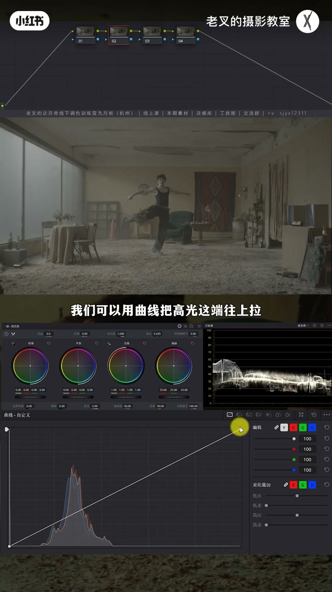
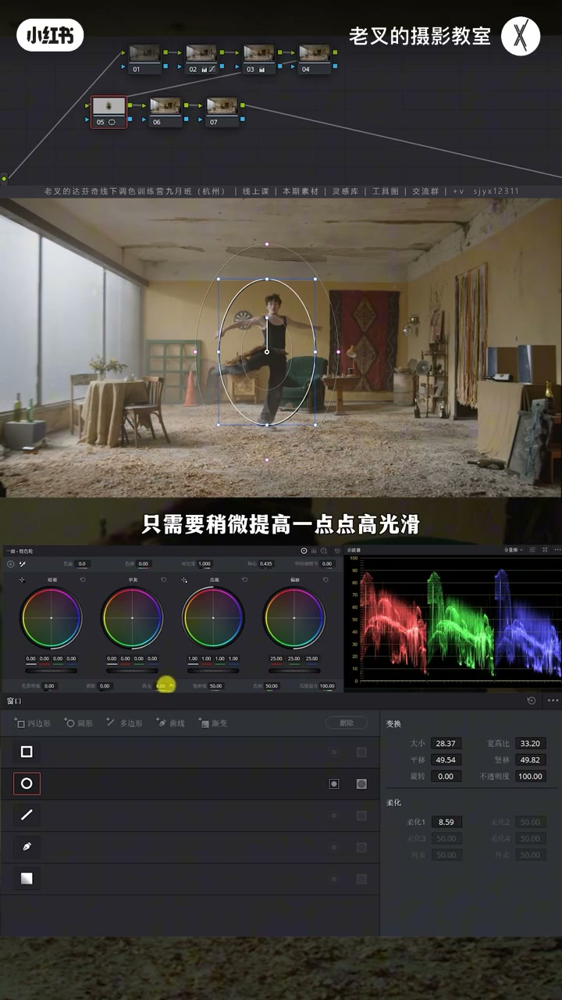
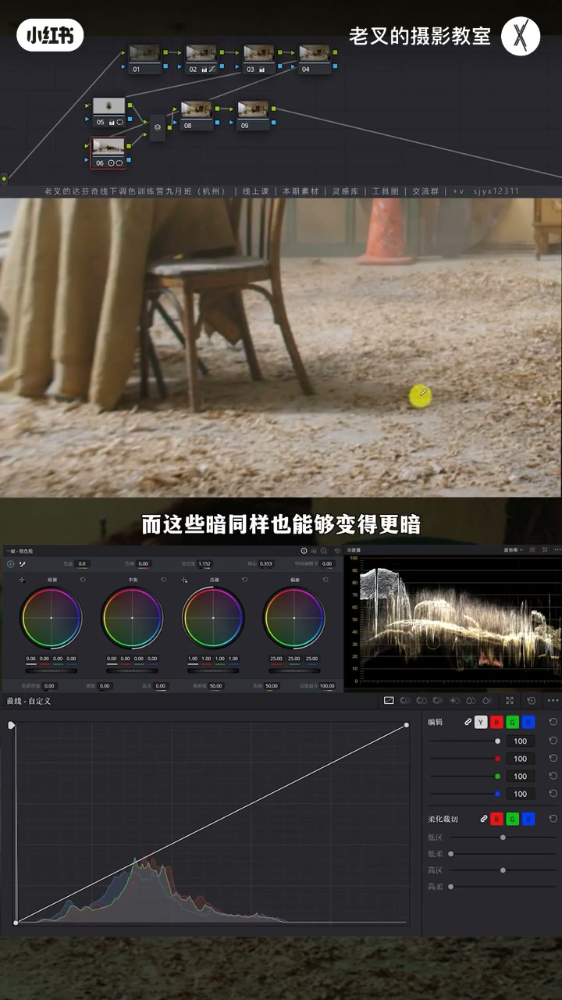
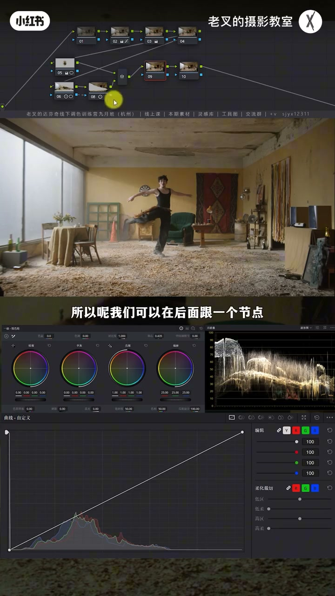
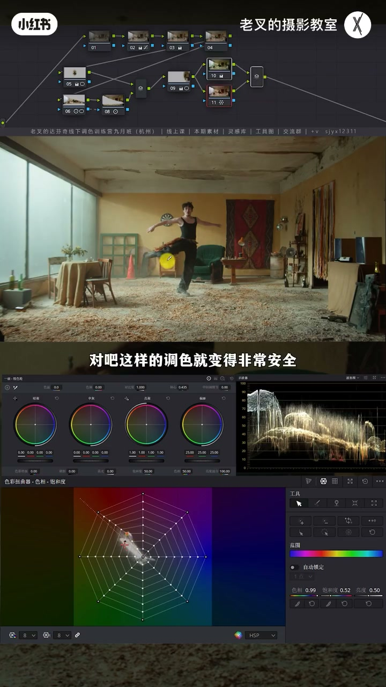
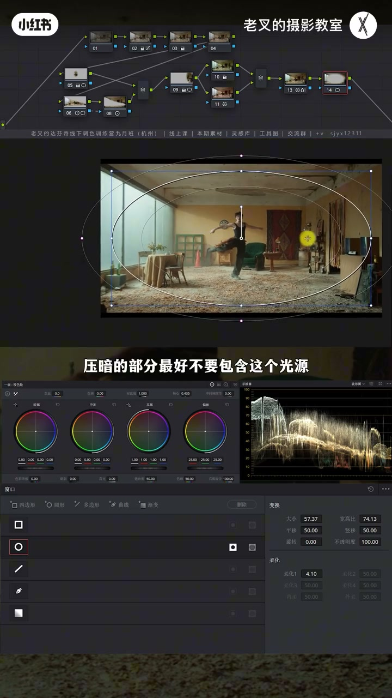
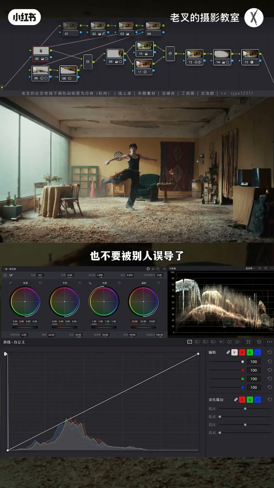

内容要点
老叉用室内大场景演示：先曲线拉开黑白位并校正白平衡，再按「主体→氛围光区→环境背光」做曝光分区；接着用挑刺修右侧过亮墙面，用色调/并行找回青橙、降红与提高青密度，最后暗角与电影感外观收束。核心口令是缺啥补啥、哪里过强就弱化——电影感外观不能代替前面的层次与挑刺。
知识结构
曲线拉开黑白位；偏黄则降色温、色调略品红；分量图看受光面 RGB 接近即可。
主体遮罩提高光压阴影；并行强化光区对比；外部节点压背光暗面不闷。
左侧来光却右侧墙过亮：遮罩压暗+略提高光，护受光面。
色调补窗青→并行找回暖；蜘蛛网降暗部红；提高青绿密度去浮。
圆形遮罩反转暗角避开光源；电影感外观创造器微调白平衡/色调。
还原对比：外观不能跳过层次；工具非唯一，缺啥补啥。
大场景层次靠「先还原准色→三区曝光→挑刺修离谱亮面→再补色」，电影感外观只是锦上添花。挑刺的本质是对照现场灯光逻辑：过亮抢戏就压、缺色就补、过艳就降。
00:00-01:50还原：曲线拉开黑白位，白平衡先做准
室内大场景要做出层次本来就难：就算前期光打到位，调完也常觉得差一口气。老叉先简单还原灰片：用曲线把高光端上拉、暗部下压，快速拉开黑白位，再在后节点略加饱和。
画面整体偏黄时回到矫正节点：色温往蓝、色调略往品红，避免偏绿。判断白平衡看分量图——找受光面黑白灰（如右侧瓶子最亮处），RGB 三值尽量接近即可，不必死磕某个精确数值。
为何一定要先校准：颜色不准会让肤色隐性偏移、物体本色丢失；真喜欢暖色可后面单独加暖。一开始就锁死偏暖，后面想改冷往往调不干净。着色节点可自定义全局偏色，他觉得当前颜色够用就先控住，节点拉到第二排。

01:50-05:03曝光三区：主体、氛围光区、环境背光
「没质感、很平」往往是没拆主次。流程图第二板块是曝光优化：先找主体——本片就是跳舞的人。大致画遮罩，思路对标现场打光：把人物身上的光打亮一点。略提高光滑块后，因高光全局影响，再略降阴影滑块，让衣服暗面保持黑、背景少受牵连。调整前人物发灰，调整后立体。
氛围区就是明确的光区：Shift/Option+P 建并行，钢笔大致勾选、开柔化。地上影子说明是硬光，强化就是亮更亮、暗更暗——加对比度并配合轴心改整体曝光，让受光面更立体。
环境区是背光面：对前一节点建外部节点（Alt/Option+O），反转选区省得重画。不能只粗暴压曝光，否则微弱受光物体失光感、暗面发闷——应靠加对比度压背光里的暗面、尽量护住背光亮面。三节点开关对比，画面瞬间立体。


05:03-05:50挑刺：右侧墙壁比中间还亮
光从左侧来，理应左亮右暗，但右侧墙壁甚至比中间墙更亮。后跟节点大致画遮罩压暗：压阴影后仍略提高光，避免受光面太闷。挑刺就是对照灯光逻辑，把离谱抢戏面压回去。

05:50-07:45颜色：补青找暖、降红、提高青密度
场景偏暖黄、黄元素多，缺一点青——能做青的主要是窗光。后节点用色调略往绿，给窗户戴上青；暖色变怪后并行节点加饱和、色相略往橙，找回暖，形成青橙色调。
继续挑刺：人物暗部红过强不合理。蜘蛛网略降红饱和，暗部与毯子、灯都更舒服。窗户青太浮：同节点用色轮 60° 切片提高绿/青密度（降明度并略降饱和），青更沉稳。三节点开关看颜色变化。

07:45-08:50定调：暗角避开光源 + 电影感外观
想加强氛围可加暗角：圆形遮罩大柔化并反转压四周。有明确光源时，遮罩中心避开光源、可略旋转顺光，压暗才自然；压到光源会怪且生硬。
还差点意思就新建节点拖入电影感外观创造器，默认往往已好看；要冷可调白平衡，不要太绿可调色调。但若跳过前面节点，外观只能给基础，画面仍发平无层次——该做的层次与挑刺不能省。

08:50-10:08收束：还原对比与「缺啥补啥」
与还原后对比，效果已经很好。调色不必被「必须用曲线染色」误导：染色方式很多，色轮同样能做；不会某工具就别硬上——RGB 混合器听懂却不会用就先不用，别的工具更直观也能出同样颜色。
口令：缺啥补啥，哪里不够强就强化，哪里太强就弱化。有帮助就三连；本期完。

完整转录（271段）
以下文本由 Whisper medium 模型自动转录，可能存在少量识别误差，已尽可能修正。
一个室内大场景 想要做出层次 本身就是会有难度的
就算我们前期把光打得非常到位
调出来的结果总感觉还是差那么点意思 对吧
比如说这个画面 我们看到前期它是做了光驱的分位的
我们可以给它先简单做一个还原 挥冰状态下要还原
首先考虑的就是把它的黑白位给拉开
所以呢 我们可以用曲线把高光这一端往上拉
然后把暗部这一端往下降
这样就可以快速的把黑白位给它拉开
然后再在后面3号节点给画面加一点点饱和度
此时我们看画面 其实它的白平衡不是很正确 整体还是偏黄 对不对
我们就回到2号节点 因为它是矫正节点 我们把白平衡给它拉回来
既然它偏黄 所以我们就把色温往反方向 也就是往蓝色方向去动
我就到这里差不多 然后再给它色调稍微往屏的方向走一点点
不然的话有点偏绿
这个时候我们怎么去判断我们的白平衡有没有做到位
其实看到分量图就可以了
我们找画面中受光面的黑白灰 比如说右边这个瓶子它的最亮处
我们要保证它的RGB3值尽可能的接近 蓝色稍微多了一点点
那此时基本上接近就可以了
我们不用去刻意的追求某一个数值一定的完全准确 这个太浪费时间了
那此时肯定会有朋友会问 我们为什么一定要矫正
原本片段的效果我还挺喜欢的 原因很简单
如果一开始的颜色不够准 一方面会让肤色产生偏移
你会一时看不出肤色的不准确
那第二个是整体偏色就必然导致物体本色丢失
比如说右侧这些物体
第三点如果你真的喜欢暖色
那么你完全可以在后面来个节点让画面调暖
但如果你一开始就保持了偏暖的结果
随着我们调色的进行你后悔了 我想要偏冷
那这个时候就可能会有点麻烦了
你的颜色可能会调不回来或者调得不干净
所以我建议大家先把颜色调准
让我们的调色是在一个正确的基础上来进行的
此时我们看到4号节点
这个4号节点就是刚刚说到你可以自定义改变画面全局偏色的着色节点
但我觉得目前这个颜色完全够用
所以我们就给它先控制 建立几个节点拉到第二排
不知道大家有没有遇到这样的反馈
说你的画面太没质感 没层次 画面很平之类之类的
这就是没有完整拆分画面主次
我们可以看到流程图 在流程图的第二个板块是曝光优化
我们对于一个画面一定要先找主体
主体一定是被强化的 对吧
那这个画面中主体不用想 自然就是跳舞的人
我们要怎么把它强化呢
我们先给它大致的画一个遮罩
强化的思路大家可以想一想
如果你在现场是打光的
那么你会通过什么行为让这个人物强化你
那不就是把人物身上光给打亮一点吧 对吧
这是很简单的一个思路
我们给人物画好了遮罩之后
只需要稍微提高一点点高光滑块
提高完了之后大家要注意
因为高光滑块是全局影响的
所以我们要稍微再降低一点阴影滑块
一方面能够保证人物身上的暗面这些衣服
本来黑的还是能保持黑 不至于发灰
那同时也不会让背景受到太多的影响
我们只是想让人物身上的这个光变得更加明显的而已
我们可以来看一下这个区别
调整前人物有一点发灰 对吧
调整后人物就变得立体了
然后就是来到第二个区 氛围区
这个画面氛围区我觉得特别好找吧
就这个光的区 对不对
我们也同样给它画一个遮罩
安卓要再加P或者Option加B建一个B型节点
在下面这个B型节点中我们可以用钢笔大致的一勾
因为它这个光区氛围还是非常非常明确的
画完遮罩之后给它开一点柔化
对于这一块我们要以什么思路来小幅像画它呢
这个光打的是映光
我们通过这个地上的影子也看得出来
要强化它自然就是把光打的再立体点
也就是让亮的更亮 暗的更暗
所以我们可以直接加一点点对比度
加完对比度之后我们配合轴心来改变一下
它整体的一个曝光程度
我就到这差不多
我们看到经过这样的调整
我们能够让这些受光面的亮变得更亮
而这些暗同样也能够变得更暗
整体的画面这些受光面这一个光区位置
它就能变得更加立体
不至于原本那么灰对不对
最后呢就是环境区域
我们需要对环境区域去做小幅的弱化
那这个画面中环境区域就是这些背光面
不然的话你光也不会打成这样吧
我们只要遵循拍摄现场灯光的设计思路
就很容易指导这些区域
那画面中除了受光面
剩下的就是背光面
所以我们可以对6号节点建立一个外部节点
按住L或者是option加O
外部节点的意思就是跟前面这个节点
有着完全相反的制造范围
那这样就可以避免我们再次花制造浪费时间
我们建好了外部节点之后要压按背光面
那我们压也不能只是简单的压
因为背光面它不是暗面
还是有不少物体有一定的光感的
我们可以看到如果我们只是单纯的压按曝光
先不管它这个边缘是不是自然
我们压按了之后能够看到
这些有被微弱的光照到的物体
它都失去了一定的光感
就会让你的暗面显得特别发闷
所以我们不能简单粗暴的压按曝光
我们正要压按这些背光面的部分
其实是背光面的暗面
那背光面的亮面我们不希望破坏太多
所以我们也可以通过增加对比度的方式
来把背光面它的暗面给它压按
好 我就到这个程度差不多
我们可以看一下这三个节点的一个行为变化
画面是不是瞬间就变得立体了
这个效果是非常非常明显的
这个操作很简单
接下来我们就开始挑刺
大家觉得这个画面中此时的曝光层次
有哪里让你觉得不舒服
我觉得既然光是从左侧照射来的
那必然会呈现左侧亮于右侧的一个结果
可是右侧这个墙壁我觉得太亮了
它甚至比中间这个墙壁还要再亮那么一点点
所以我们可以在后面跟一个节点
给右侧墙壁大致化一个遮罩
画完了之后我们给它压按一点点
同样的要压按就不能只压按
我们在压完了阴影滑块之后
还得稍微把高光滑块给它提点上来
原因跟刚刚是一样的
不要让这些瘦光面太闷
这样的操作就是能够简单的强化我们的一个层次了
效果还是比较好的
接下来我们就可以动颜色
先想一想我们要干嘛
这个场景整体是偏暖黄的
那要去做风格化颜色大家第一时间想到什么颜色
是不是金层色调
画面中有变成的能力
黄色元素非常非常多
但是缺了那么一点点青色
能做青色的只有这个窗户光
其他地方没有什么条件能够做青色
先不想太多
我们既然缺青色就把缺点色找回来
我们在后面来个节点用色调
色调是绿和平的一个走向
所以我们可以在色调中减一点点
色调的竖直让它往绿色方向走一点点
那这样就能够让这个窗户戴上一定的青色
那此时青色是有了
暖色就变怪了对不对
那我们就再次按住L加P或者是Option加P
建立一个并行节点
在下面这个节点中把暖色给它找回来就行了
稍微给它加一点点饱和度
然后色相往橙色方向走一点点来
我们此时看
是不是瞬间就变成了青橙色调了
对吧
那这样调色就变得非常安全
而且变得非常直接啊
不用去动太多脑子也不用去费心的去调色轮
之类之类的很麻烦
好 我们继续来挑刺
这个画面中哪里的颜色让你不舒服
我觉得最不舒服的就是这个红色
这些红色特别不舒服
特别是人物暗部的红
因为你暗部的饱和度怎么可能会比亮面还要去强这么多呢
对吧 所以我们后面再跟一个节点
用蜘蛛网稍微把红色饱和度给它降一点点下来
好 降了之后呢
我们看到暗部原本发红
但是我们降完了暗部就变舒服了
包括右侧这个毯子还有这个灯
原本是红的发液
我们把它饱和度降低了之后呢
也能够让它变得舒服一点
再继续挑刺
还有什么不舒服的
我觉得窗户的青色不够沉稳
我觉得它有点太浮了
所以我们可以在同一个节点中
用色轮60较切片工具
把绿色和青色的密度给它稍微提高一点
增加密度的行为就是降低它的明度
小幅降低它的饱和度
我们降低了一点它的明度之后
它就没有原本那么扎眼了 对吧
没有那么刺眼了 这样的颜色就舒服多了
我们可以这三个节点来开关一下
看一下 效果还是不错的
最后呢就是定调
定调我们要做什么样的事情
比如说你想让画面的氛围感再强一点
那我可能会考虑加一个暗角
暗角怎么建立
就是建立一个圆形遮罩
然后把柔化开大 并且把它反转了
把四周压暗就是个暗角
但是对于这种有明确光源的
我们压暗的部分最好不要包含这个光源
所以我们把遮罩往右移一点点
以这样的一个形式
也可以顺着光的方向稍微旋转一点
然后再去给它压暗
你会发现这样的压暗会变得更加自然
如果你把光源压暗的话 那画面就变得特别怪了
这个暗角有就会变得特别生硬
此时整体的效果已经不错了
但总感觉还差那么点意思
既然差点意思 不用想太多
再建一个节点 在特效库中搜索
把电影感外观创造器把它拉到新建的节点上
什么都不用改 你会发现
效果很好 对不对
那当然啊 如果说你想让它冷一点可不可以
你在电影感外观创造器中把摆平痕
往冷的方向走一点点
或者说你不想让它这么绿
那你可以在色调中往屁影的方向走一点
怎么调都可以 很好看
我觉得这样的一个效果其实就是不错的
那你说为什么我不直接用电影感外观创造器
既然它这么好用的话
前面做这么多事情不是有点浪费时间吗
如果说你前面这些节点都不做的话
你会发现 电影感外观创造器虽然能够给你画面带来一定的基础
可是这样的画面就是发屏没有层次
所以前面这些节点
该做还得做 挑次该做还得做
那现在结果我们可以用还原后的画面来做一下对比
这是还原后的画面
这是我们调好后的画面
效果是不是非常不错 所以调色千万不要想太复杂
也不要被别人误导了
一定要用多么复杂的思路来操作
如果说你不会曲线
那非要你用曲线去染色
那我觉得没有特别大的必要吧
因为你染色的方式有非常多 你可以用色轮
当然曲线也不是不可要
如果你会用曲线也非常好用
可是你不会 那你可以平时去练
但你不要把它当做唯一的一个效果
达芬奇能够实现某一个效果的工具有非常非常多
不是哪个工具是必选的
那包括我们之前有很多朋友来问过我说
老查 RGB 混合器好难学
我理解不了
我的意思就是 我先给你讲明白
如果你听明白了 但是不知道怎么应用
那就别用它
就那么简单 因为你要用 RGB 混合器给画面做成的颜色效果
你用别的工具一样能够实现
而且别的工具更直观 为什么非要用这个工具呢
这就是我想说的一个点
我们要调色就是
缺啥补啥 哪里不够强
我们就强化哪里 哪里太强
我们就弱化哪里 就那么简单
讲到这里 如果你觉得对你有帮助的话
还希望多多赞联 好了 这期就到这里
886